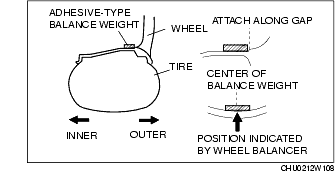
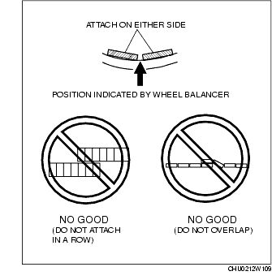
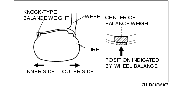

Workshop Manual ➭ SUSPENSION ➭ WHEEL AND TIRES ➭ WHEEL BALANCE ADJUSTMENT (ALUMINUM ALLOY WHEEL)
WHEEL BALANCE ADJUSTMENT (ALUMINUM ALLOY WHEEL)
id021200104300
• Adjust the outer wheel balance first, then the inner wheel balance. • Be careful not to scratch the wheels.
Adhesive-type Balance Weight (Outer)
-
Remove the double-sided adhesive tape remaining on the wheel, then clean and degrease the bonding area.
-
Set the wheel on a wheel balancer, measure the amount of unbalance and the position with the mode set for knock-type balance weight.
-
Multiply the amount of unbalance by 1.6 to obtain the balance weight value.
-
Select a balance weight closest to the weight value and attach the balance weight on the position (outer) indicated by the wheel balancer.
Example calculation of balance weight valueIndicated amount of unbalance: 23 g {0.81 oz}23 g {0.81 oz}×1.6 = 36.8 g {1.30 oz}Selected balance weight value: 35 g {1.24 oz}
• When selecting a balance weight, select one closest to the calculated value. Example: 32.4 g {1.14 oz} = 30 g {1.06 oz}
• Use a genuine balance weight or equivalent (steel). per 5 g for 2 s or more. }• When attaching the weight, press the weight with a force of 25 N {2.5 kgf, 5.5 lbf

- If attaching tow balance weights, position them so that each is on either side of the position indicated by the wheel balancer.

• Do not attach weight balances in a row. • Do not overlap the balance weights. . }• Total weight must not exceed 160 g {5.65 oz
Knock-type Balance Weight (Inner)
-
Attach a weight corresponding to the measured weight value on the position (inner) indicated by the wheel balancer.

• Do not attach three or more balance weights. . }• One balance weight must not exceed 60 g {2.12 oz}, and a total of tow balance weights must not exceed 100 g {3.53 oz
Remaining Amount of Unbalance Confirmation
-
After installing the outer and inner balance weights, operate the wheel balancer again.
-
Confirm that the remaining unbalance does not exceed the following on either side.
• If the remaining unbalance exceeds the specifications, adjust the wheel balance again.
Specifications